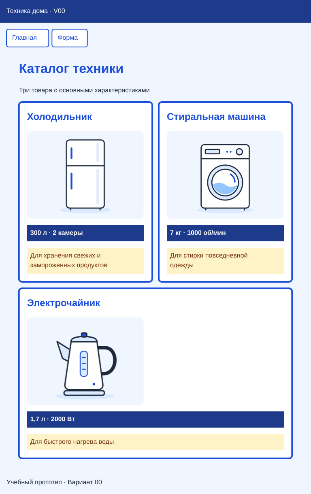
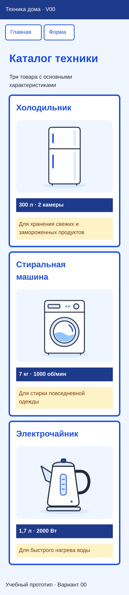
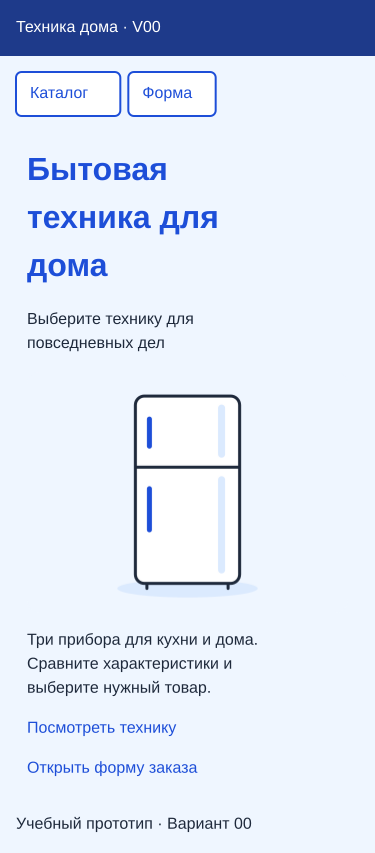
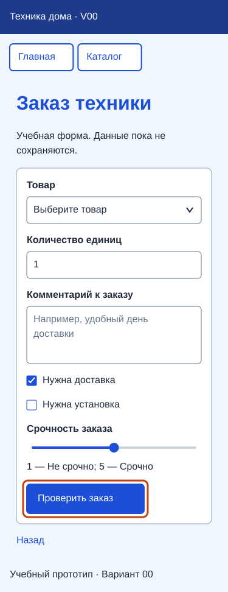

Учебный вариант 00 — пара 18
Постоянный пример преподавателя «Техника дома · V00». Он принадлежит этой паре и не зависит от смены студенческих вариантов. Студенты продолжают свои номера и данные.
Задание: продолжить Variant00-web, сохранив три страницы и их содержание. Добавить viewport, контейнер Flexbox для трёх карточек, перенос меню и медиазапрос для узкого экрана. Проверить главную, каталог и форму при ширине 320, 375 и 768 CSS-пикселей. Способ выполнения — в статье этой пары.
Ниже сохранён полный состав примера: файлы, тексты, изображения, поля, стили и проверки. Не нужно заново собирать уже работающий проект или заменять все файлы готовым кодом.
Как выглядит готовый результат
Четыре образца показывают результат адаптации этого примера. Это учебные изображения с условной отрисовкой элементов, а не снимки браузера. Сверяйте расположение, содержание, цвета и читаемость; совпадение до пикселя не требуется. Страницу нужно собрать из настоящих HTML-элементов.
Каталог — 768 px

Каталог — 375 px

Главная — 375 px

Форма — 375 px

На узком экране допустима прокрутка вниз: изображения показывают страницы целиком. Горизонтальной прокрутки всей страницы быть не должно. На 320 px проверьте те же признаки, что на 375 px; отдельный образец не требуется. Внешний вид списка, флажков и ползунка зависит от браузера. Работу ссылок, встроенной проверки ввода и GET проверяйте действием.
Файлы и общие элементы
В папке Variant00-web находятся index.html, catalog.html, form.html, style.css и папка images с тремя SVG-файлами из этого листа. Каждая страница содержит <!doctype html>, html lang="ru", разделы head и body. В head — кодировка UTF-8, собственный title, подключение style.css и одна строка viewport:
<meta name="viewport" content="width=device-width, initial-scale=1">
В body каждой страницы сохраняются header, nav, main class="page" и footer. В шапке обычный абзац «Техника дома · V00». В подвале — «Учебный прототип · Вариант 00».
| Где находится меню | Две ссылки меню |
|---|---|
index.html |
«Каталог» → catalog.html; «Форма» → form.html |
catalog.html |
«Главная» → index.html; «Форма» → form.html |
form.html |
«Главная» → index.html; «Каталог» → catalog.html |
В меню нет ссылки на открытую страницу. Дополнительные переходы внутри основной части перечислены ниже.
Главная страница
| Элемент | Содержание |
|---|---|
title и h1 |
Бытовая техника для дома |
| Короткое пояснение | Выберите технику для повседневных дел |
| Описание | Три прибора для кухни и дома. Сравните характеристики и выберите нужный товар. |
| Изображение | images/fridge.svg, alt="Холодильник" |
| Переход к каталогу | «Посмотреть технику» → catalog.html |
| Переход к форме | «Открыть форму заказа» → form.html |

Каталог
title и h1 — «Каталог техники». Пояснение — «Три товара с основными характеристиками». Внутри main после пояснения находится div class="products", а внутри него — три непосредственных ребёнка article class="card" в следующем порядке:
h2 |
Характеристика, абзац class="specs" |
Описание, абзац class="description" |
Изображение и alt |
|---|---|---|---|
| Холодильник | 300 л · 2 камеры | Для хранения свежих и замороженных продуктов | images/fridge.svg; «Холодильник» |
| Стиральная машина | 7 кг · 1000 об/мин | Для стирки повседневной одежды | images/washer.svg; «Стиральная машина» |
| Электрочайник | 1,7 л · 2000 Вт | Для быстрого нагрева воды | images/kettle.svg; «Электрочайник» |
В каждой карточке порядок: заголовок → картинка → характеристика → описание. Меню и заголовок каталога в products не включаются.


Это готовые учебные иллюстрации без брендов. Скопируйте их в images своего демонстрационного веб-проекта. Рисовать изображения заново не требуется.
Форма
title и h1 — «Заказ техники». Форма имеет class="request-form" и method="get"; action не задан, отправка идёт на текущую страницу. Подписи связаны с полями через одинаковые for и id; для отправляемых элементов заданы name.
| Порядок и подпись | HTML и значения |
|---|---|
| 1. Товар | select id="product" name="product" required; первая строка «Выберите товар» с value=""; далее Холодильник (fridge), Стиральная машина (washer), Электрочайник (kettle) |
| 2. Количество единиц | input type="number" id="quantity" name="quantity" min="1" step="1" value="1" required |
| 3. Комментарий к заказу | textarea id="comment" name="comment" rows="3" placeholder="Например, удобный день доставки" |
| 4. Нужна доставка | input type="checkbox" id="delivery" name="delivery" value="yes" checked |
| 5. Нужна установка | input type="checkbox" id="installation" name="installation" value="yes"; изначально не выбран |
| 6. Срочность заказа | input type="range" id="urgency" name="urgency" min="1" max="5" value="3"; края шкалы «Не срочно» и «Срочно» |
Каждое поле с подписью находится в своём абзаце. Абзацы пунктов 1, 2, 3 и 6 имеют класс form-field; два абзаца флажков остаются без него. Кнопка type="submit" — «Проверить заказ». После формы ссылка «Назад» ведёт на index.html.
Пустой выбор товара не проходит встроенную проверку браузера. Допустимая отправка показывает параметры GET в адресе. Невыбранные флажки не отправляются; выбранные отправляют своё значение. Заказ не сохраняется и не обрабатывается, JavaScript не добавляется.
Общее оформление
Следующие значения сохраняют внешний вид примера. В таблице перечислены свойства существующих правил; не нужно создавать их повторные копии.
| Селектор | Свойства |
|---|---|
* |
box-sizing: border-box |
body |
margin: 0; font-family: Arial, sans-serif; font-size: 1rem; line-height: 1.5; background-color: #EFF6FF; color: #1E293B; overflow-wrap: anywhere |
header |
padding: 1rem; background-color: #1E3A8A; color: #FFFFFF |
header p |
margin: 0 |
nav |
display: flex; flex-wrap: wrap; gap: 0.5rem; padding: 1rem |
nav a |
margin: 0; max-width: 100%; padding: 0.5rem 0.75rem; background-color: #FFFFFF; color: #1D4ED8; border: 2px solid #1D4ED8; border-radius: 0.35rem |
nav a:hover |
background-color: #1D4ED8; color: #FFFFFF |
h1, h2, a |
color: #1D4ED8; подчёркивание ссылок сохраняется |
main.page |
width: 92%; max-width: 56rem; margin: 0 auto; padding: 1rem |
img |
max-width: 100%; height: auto |
.card img |
display: block; width: 100%; max-width: 18rem |
.card |
padding: 1rem; background-color: #FFFFFF; border: 4px solid #1D4ED8; border-radius: 0.5rem |
.card .specs |
padding: 0.5rem; background-color: #1E3A8A; color: #FFFFFF; font-weight: bold |
.card .description |
padding: 0.5rem; background-color: #FEF3C7; color: #78350F |
footer |
padding: 1rem |
В CSS после обычного правила .card добавляется:
.products {
display: flex;
flex-wrap: wrap;
gap: 1rem;
}
.products > .card {
flex: 1 1 16rem;
min-width: 0;
margin-bottom: 0;
}
Оформление формы и фокус
| Селектор | Свойства |
|---|---|
.request-form |
padding: 1rem; background-color: #FFFFFF; border: 1px solid #94A3B8; border-radius: 0.5rem |
.form-field |
margin: 0 0 1rem |
.form-field > label |
display: block; margin-bottom: 0.35rem; font-weight: bold |
.request-form input, .request-form select, .request-form textarea, .request-form button |
font: inherit |
.request-form select, .request-form input[type="number"], .request-form textarea |
width: 100%; min-width: 0; max-width: 100%; padding: 0.6rem; border: 1px solid #64748B; border-radius: 0.35rem |
.request-form input[type="range"] |
width: 100% |
.request-form textarea |
resize: vertical |
.request-form button |
padding: 0.65rem 1rem; border: 2px solid #1D4ED8; border-radius: 0.35rem; background-color: #1D4ED8; color: #FFFFFF |
Ширину 100% флажкам не назначать. Для видимого фокуса сохраняется:
a:focus-visible,
input:focus-visible,
select:focus-visible,
textarea:focus-visible,
button:focus-visible {
outline: 3px solid #C2410C;
outline-offset: 3px;
}
В самом конце CSS находится один медиазапрос:
@media (max-width: 600px) {
main.page {
padding: 0.75rem;
}
.products > .card {
flex-basis: 100%;
}
}
Ожидаемое расположение

Схема показывает расположение, а не заменяет страницы картинкой. На 320 и 375 px каталог показывает карточки по одной. На 768 px при стандартном шрифте браузера ожидаются две карточки рядом и третья ниже на всю строку. При увеличенном шрифте число карточек в строке может уменьшиться: важнее читаемость и отсутствие общего горизонтального переполнения.
На всех ширинах главная остаётся читаемой, меню переносится при нехватке места, поля формы помещаются внутри белой поверхности. Синие характеристики, жёлтые описания и порядок товаров сохраняются.
Что показать
Порядок проверки и показа: Как сдать работу. Если нужно сначала включить панель размеров, откройте настройку ширины в браузере.
Проверьте девять сочетаний: три страницы при каждой из ширин 320, 375 и 768 px. Прокрутите каждую до конца: горизонтальной прокрутки всей страницы нет, тексты не обрезаны, картинки сохраняют пропорции, ссылки работают.
При итоговом показе откройте все три страницы на 375 px, затем каталог на 768 px. Покажите видимый фокус с клавиатуры и проверку формы: пустой выбор запрещён, допустимая отправка показывает параметры GET. Объясните роль products и условие медиазапроса. Отдельный письменный отчёт не нужен.